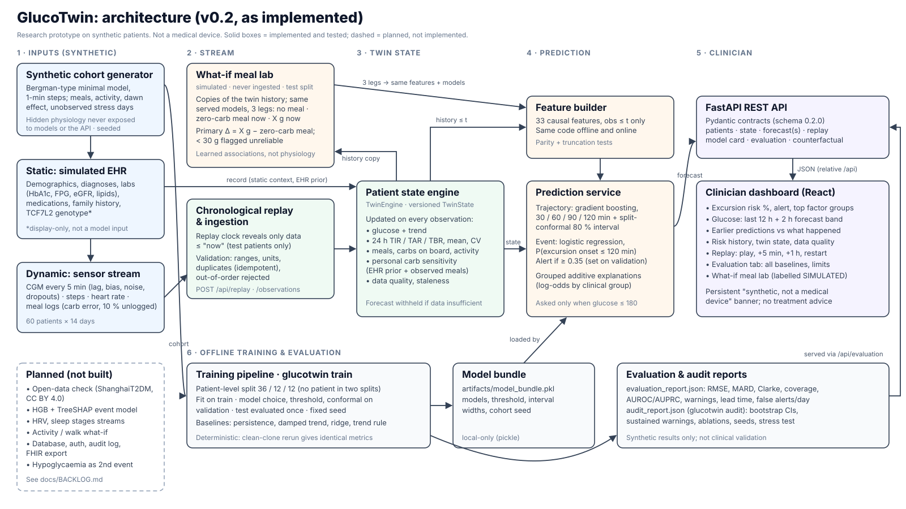
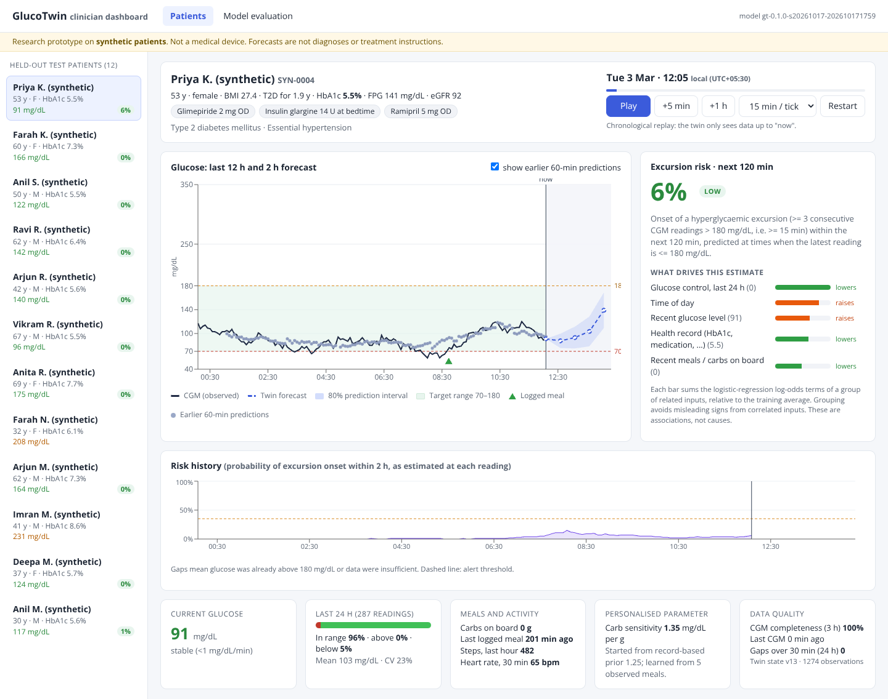

A continuously updated virtual Type 2 diabetes patient that estimates, up to 2 hours ahead, the risk that a post-meal glucose excursion is about to begin, and shows a doctor why.
Team: team mono · College / incubator: Amrita Vishwa Vidyapeetham, Chennai
Members: Mohnish Shanmugavadivel (sole member)
At time t, asked only if the latest CGM ≤ 180 mg/dL. Positive if ≥ 3 consecutive 5-min CGM readings > 180 mg/dL (≥ 15 min; gaps break the run) begin within (t, t + 120 min].
Why "onset": predicting "above 180" while already above 180 is trivial and useless clinically.
A versioned per-patient state is updated with every observation: glucose and trend, 24 h time-in-range, meals and carbs on board, activity, data quality. Forecasts are re-issued at each reading.
The static record (labs, medications, history) gives context and a prior. Streams give the current state. Both feed the same leakage-safe feature builder offline and online.
Each twin learns its patient's carb sensitivity (mg/dL per g) from observed meal responses, shrunk towards a record-based prior. This changes the expected post-meal rise.
The twin does not simulate physiological interventions such as activity ("what if she walks after lunch?"). That would need per-patient physiological parameter fitting, which is on the roadmap, not built. Its what-if meal lab only re-runs the learned forecasters on a hypothetical meal (an association, not a mechanism). Our twin is a state-tracking forecaster with one personalised physiological parameter.

| Plausibility check | Ours | ShanghaiT2DM* |
|---|---|---|
| Time in range 70–180 | 77.8% | 77.7% |
| Time above 180 | 21.8% | 20.0% |
| Time below 70 | 0.4% | 2.4% |
*Published summary of an open Chinese T2D cohort (Zhao et al., Sci Data 2023), quoted from a secondary copy. This is a plausibility check, not validation.
Known gaps. Lows are under-represented: hypoglycaemia only occurs on sulfonylurea or insulin in our simulator. Synthetic HbA1c is derived from the evaluated 14 days (corr 0.95 with that window's mean CGM). The ablation shows it does not inflate results (slide 8).
| Model | 30 min | 60 min | 120 min |
|---|---|---|---|
| Persistence (last value) | 18.7 | 31.4 | 46.6 |
| Damped trend | 17.4 | 31.1 | 50.4 |
| Ridge | 11.2 | 17.0 | 27.9 |
| Gradient boosting (served) | 10.4 | 17.2 | 25.9 |
95% patient-bootstrap CI, served model: 30 min 9.8–11.0; 120 min 23.2–29.1. 80% conformal interval coverage on test: 0.76–0.80. Clarke A+B ≥ 95.7%.
| Model | AUROC (95% CI) | Sens / Spec | False alerts / day |
|---|---|---|---|
| Trend rule baseline | 0.655 (0.583–0.736) | 0.44 / 0.74 | 6.3 |
| Logistic regression (served) | 0.884 (0.839–0.923) | 0.67 / 0.90 | 1.4 |
| Gradient boosting | 0.936 (0.915–0.955) | 0.78 / 0.90 | 1.1 |
Test prevalence 14.6% of eligible time points. Logistic regression is served because its explanation is exact and additive. Gradient boosting discriminates better (roadmap: serve it with SHAP).
| Definition | Share of onsets |
|---|---|
| Any alert in the 2 h before onset | 91% (0.83–0.98) |
| …with ≥ 30 min lead | 87% |
| Sustained: alert still on just before onset | 69% (0.48–0.83) |
Median lead: any alert 95 min; sustained 85 min (capped at 120). False-alert episodes per monitored day: 1.36 (0.92–1.92). The headline "91% warned" uses the lenient definition, so we report both.
| Check | Logistic AUROC | Sustained warned |
|---|---|---|
| Main cohort | 0.884 | 69% |
| 3 other cohort seeds | 0.883–0.910 | 72%–78% |
| No record (EHR) features | 0.907 | 73% |
| No meal features | 0.849 | 68% |
| Stress: 60% logged, ±50% carbs, 0–45 min late, noisier CGM | 0.904 | 70% |
Stress test: RMSE at 30 min rises from 10.4 to 15.4; warnings with ≥ 30 min lead fall from 87% to 78%. Direct record features did not help held-out discrimination; the record contributes through the personal prior and context.

Deep link /?patient=SYN-0039&start=151.833 · verified against the live API
Deep link /?patient=SYN-0019&start=253.667 · Of 298 test onsets, 205 (69%) had a sustained warning and 272 had an alert at some point in the prior 2 h. scripts/find_demo_scenario.py lists 53 daytime onsets (08:00–21:59, ≥ 30 h into the data) whose alert was off at the last reading before onset.
We have run no pilot and have no user or outcome data. No impact figures are claimed.
make setup make train # same metrics every run make serve # http://localhost:8000 glucotwin audit # CIs, ablations, stress test make check # lint + tests + build
GlucoTwin: a transparent, reproducible digital-twin prototype for early warning of post-meal hyperglycaemia.
Team: team mono · Amrita Vishwa Vidyapeetham, Chennai · Mohnish Shanmugavadivel